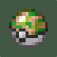
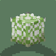
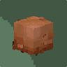
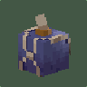
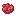
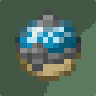
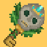

Ticket normal
4.000 Pokédólares
Entrada básica a la Zona Safari, sin bonus.
MAPA INTERACTIVO
Explora el mapa de la Zona Safari: acerca y aleja con la rueda o pellizcando, arrastra para moverte y pulsa cualquier punto para ver sus coordenadas.
 6 zonas para explorar
6 zonas para explorar Spawn, taxis y Poképaradas
Spawn, taxis y Poképaradas Coordenadas al hacer clic
Coordenadas al hacer clicPara entrar necesitas un ticket, que se compra en el menú del Safari. Mientras dure, puedes capturar todo lo que encuentres.
4.000 Pokédólares
Entrada básica a la Zona Safari, sin bonus.
100 DiosesCoins
👑 El rango Maestro tiene 1 ticket premium gratis cada 24 horas.
Solo se puede capturar con Safari Ball o Jet Ball.No se combate contra los Pokémon salvajes: se capturan siempre fuera de batalla. Solo hay combates contra los entrenadores del Safari.La probabilidad normal del servidor es 1/8192. Los bonus se suman entre sí.
Cada Pokémon que capturas da Safari Points (SP): de 3 a 7 de base (10 si es shiny), más un extra según cómo se comporta. Cuanto más difícil de atrapar, más puntos.
Sale corriendo muy rápido en cuanto te acercas.
Da 8–12 SP · shiny 15 SP
Acércate con una bomba de humo para que tarde en detectarte, o déjalo quieto con una bola pegajosa antes de lanzar la Safari Ball.
Te ataca directamente.
Da 6–10 SP · shiny 13 SP
Aturdirlo con una bola de fango o una bola pegajosa te da tiempo para capturarlo.
Se aleja de ti poco a poco.
Da 5–9 SP · shiny 12 SP
Ve detrás de él sin prisa; una bola de fango puede frenarlo.
No reacciona: puedes acercarte sin problema.
Da 3–7 SP · shiny 10 SP
El más fácil de capturar, pero el que menos puntos da.
Ejemplo: un shiny muy tímido da el máximo, 15 SP (10 + 5). Los SP se gastan en la tienda del Safari y en la Llave Safari.
Todos los entrenadores del Safari tienen las mismas tres dificultades. Al hablar con uno eliges contra cuál combatir; si ganas, ese reto tiene 6 horas de espera antes de poder repetirlo. Sus posiciones están en el mapa (filtro «Entrenadores»).
Rival de nivel 30
20 SP200 $

10 Safari Balls
5 bolas pegajosas
7 bolas de fango
1 bomba de humoRival de nivel 60
25 SP350 $

Rival de nivel 100
30 SP500 $
Ratio de captura ×1,5 fuera de combate.

Ratio de captura ×2 y vuela más lejos.
Lánzala a un Pokémon: puede dejarlo aturdido.
Lánzala a un Pokémon: siempre lo deja aturdido.

Abre el Tesoro Safari (skins de Pokémon). Más baratas en pack:
Lánzala al suelo: los Pokémon cercanos tardan más en detectarte.
Lo que aparece en cada zona del Safari, con su familia evolutiva completa. Todo lo que atrapas aquí trae al menos un IV a 31: filtra por grupo huevo para buscar breeders para tu cadena de crianza.
Consejo: ve con Pokémon de nivel 1 a 5, así las Safari Balls capturan mucho mejor.
Raro sale muy poco. Pulsa un Pokémon para ver su ficha en la Pokédex.